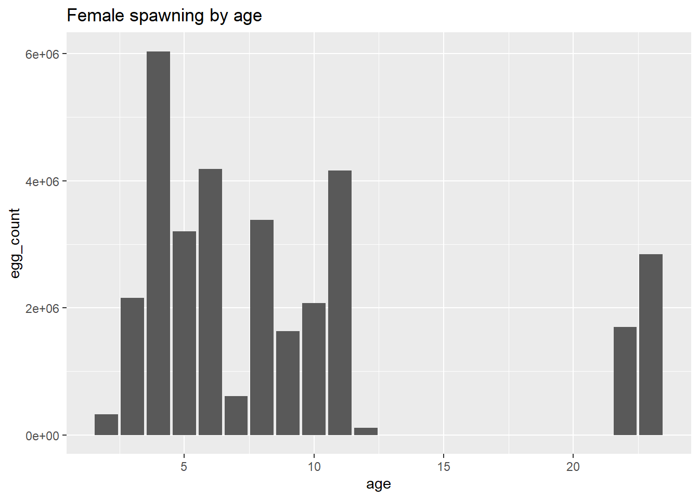
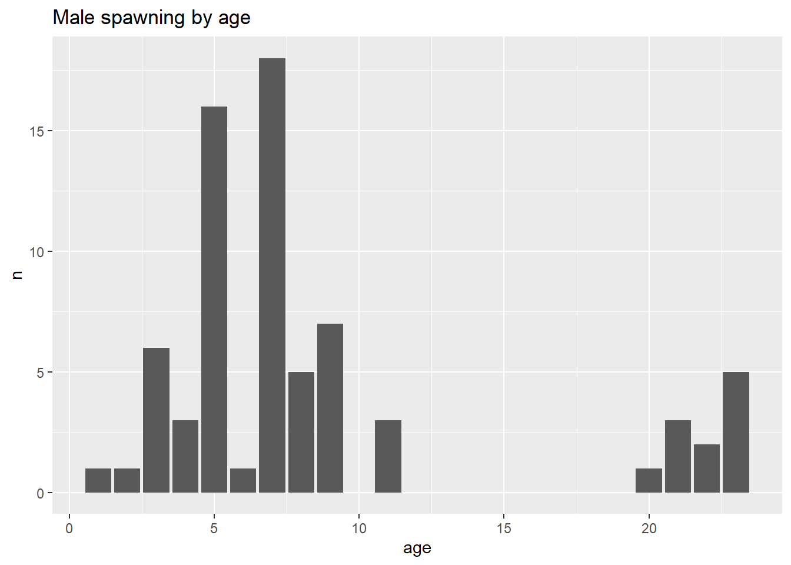
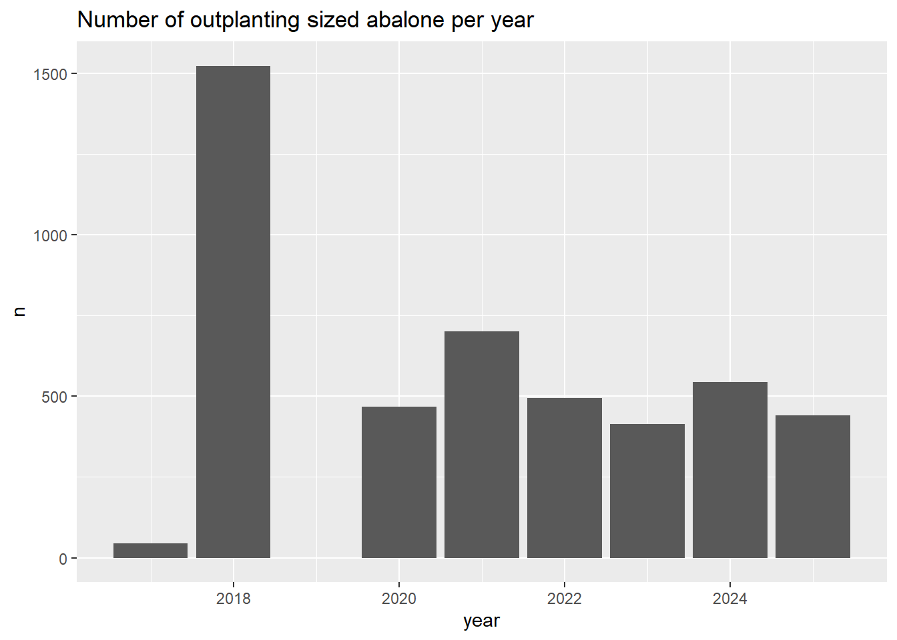
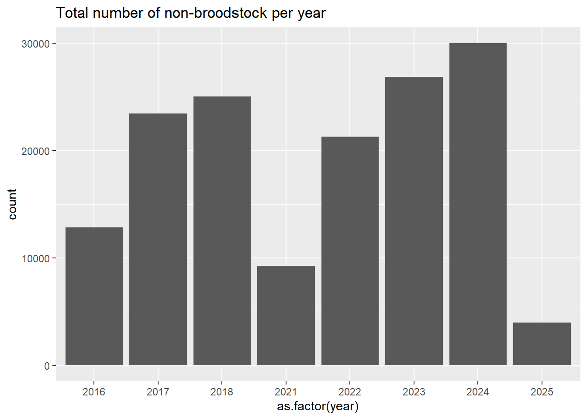
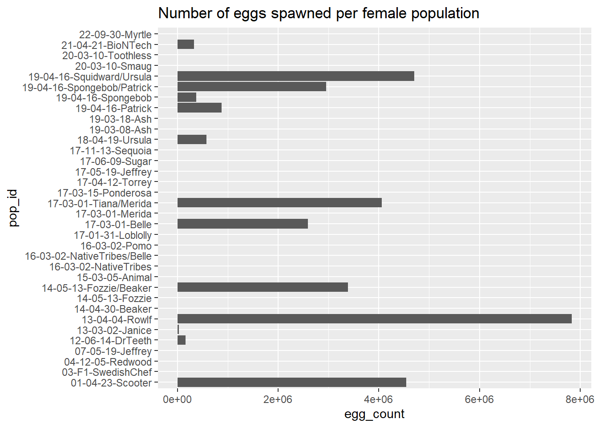
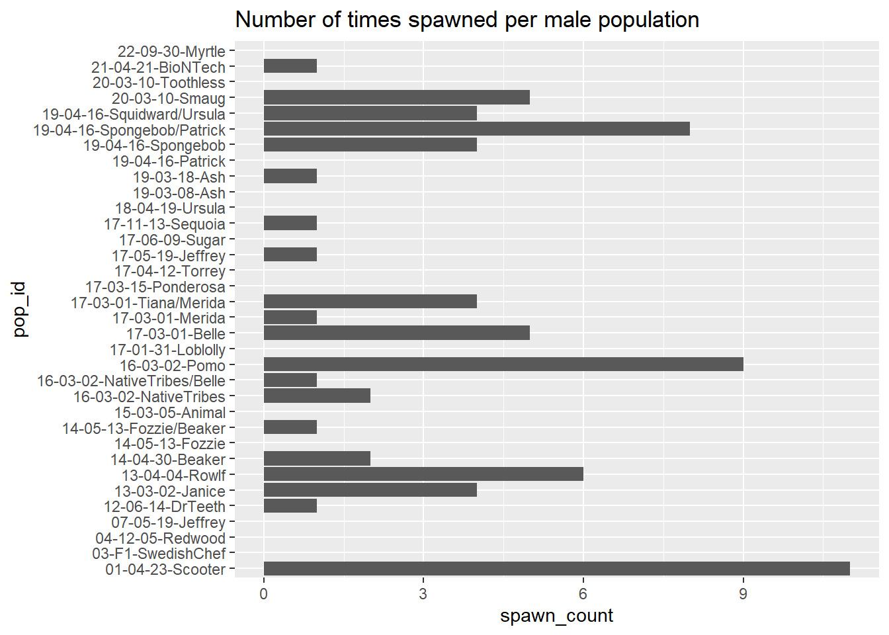

library(tidyverse)
library(here) # to read in data paths
library(janitor) # clean column namesPreliminary Exploration
This file contains the preliminary data exploration for the final project infographic for EDS 240 - Data Visualization and Communication.
The general theme of this infographic is examining the successes and complications for the White Abalone Captive Breeding Program. This program was created in the interest of conserving the endagered White Abalone through captive breeding efforts. Over the last decade, this program has created millions of abalone but are still magnitudes under what is necessary to save this species. This project will focus specifically on reproductive patterns in the various stages of the life cycle present during captive breeding efforts.
Load packages
Import data
counts <- read_csv(here("data", "Count_All_DataRaw.csv")) %>%
clean_names() %>%
remove_empty(c("rows", "cols"))
spawn <- read_csv(here("data", "Spawning_All_DataRaw.csv")) %>%
clean_names() %>%
remove_empty(c("rows", "cols"))
vitals <- read_csv(here("data", "Vitals_All_DataRaw.csv")) %>%
clean_names() %>%
remove_empty(c("rows", "cols"))
pedigree <- read_csv(here("data", "White_Abalone_Pedigree_Data_Metadata(Pedigree).csv")) %>%
clean_names() %>%
remove_empty(c("rows", "cols"))Wrangle data
# reconcile multiple pop_ids/messy naming conventions
# when dates do not match, choosing the younger one
unique(vitals$pop_id)
vitals <- vitals %>%
mutate(pop_id = case_when(
pop_id == "13-04-04-Rowlf, 13-03-02-Janice" ~ "13-04-04-Rowlf/Janice",
pop_id == "17-03-01-Belle, 16-03-02-Acjachemen, 16-03-02-Tongva, 16-03-02-Miwok, 16-03-02-Pomo, 16-03-02-Chumash" ~ "16-03-02-NativeTribes/Belle",
pop_id == "19-04-16-Squidward, 18-04-19-Ursula" ~ "19-04-16-Squidward/Ursula",
pop_id == "19-04-16-Spongebob, 19-04-16-Patrick" ~ "19-04-16-Spongebob/Patrick",
pop_id == "17-03-01-Tiana, 17-03-01-Merida" ~ "17-03-01-Tiana/Merida",
pop_id == "16-03-02-Acjachemen, 16-03-02-Tongva, 16-03-02-Miwok, 16-03-02-Pomo, 16-03-02-Chumash" ~ "16-03-02-NativeTribes",
pop_id == "14-04-30-Beaker, 14-05-13-Fozzie" ~ "14-05-13-Fozzie/Beaker",
pop_id == "16-03-02-Acjachemen, 16-03-12-Tongva, 16-03-02-Miwok, 16-03-02-Pomo" ~ "16-03-02-NativeTribes",
pop_id == "16-03-02-Acjachemen, 16-03-02-Tonga, 16-03-02-Miwok, 16-03-02-Pomo" ~ "16-03-02-NativeTribes",
pop_id == "22-05-10-Bubbles, 22-05-10-Blossom" ~ "22-05-10-Bubbles/Blossom",
pop_id == "21-04-21-Moderna,\n21-04-21-Pfizer,\n21-04-29-JandJ" ~ "21-04-21-Vaccines",
pop_id == "16-03-02-Acjachemen, 16-03-02-Chumash, 16-03-02-Tongva, 16-03-02-Miwok, 16-03-02-Pomo" ~ "16-03-02-NativeTribes",
pop_id == "22-03-01-Mardi, 22-03-09-WALLE" ~ "22-03-01-Mardi/WALLE",
pop_id == "21-04-21-Moderna, 21-04-21-Pfizer, 21-04-29-JandJ" ~ "21-04-21-Vaccines",
pop_id == "14-04-30-Beaker,14-05-13-Fozzie" ~ "14-05-13-Fozzie/Beaker",
pop_id == "22-03-01-Mardi, 22-03-09-Walle" ~ "22-03-01-Mardi/WALLE",
pop_id == "17-03-01-Tiana, 17-03-01-Merida, 17-03-01-Belle, 16-03-02-Acjachemen, 16-03-02-Tongva, 16-03-02-Miwok, 16-03-02-Pomo, 16-03-02-Chumash, 20-03-10-Smaug, 19-04-16-Spongebob, 19-04-16-Patrick, 19-04-16-Squidward, 18-04-19-Ursula" ~ "20-03-10-Mixed",
TRUE ~ pop_id))
unique(counts$pop_id)
counts <- counts %>%
mutate(pop_id = case_when(
pop_id == "16-03-02-Acjachemen,\n16-03-12-Tongva,\n16-03-02-Miwok,\n16-03-02-Pomo" ~ "16-03-02-NativeTribes",
pop_id == "17-03-01-Merida, 17-03-01-Tiana" ~ "17-03-01-Tiana/Merida",
pop_id == "17-03-01-Tiana, 17-03-01-Merida" ~ "17-03-01-Tiana/Merida",
pop_id == "16-03-02-Acjachemen, 16-03-02-Tongua, 16-03-02-Miwok, 16-03-02-Pomo" ~ "16-03-02-NativeTribes",
pop_id == "22-05-10-Bubbles, 22-05-10-Blossom" ~ "22-05-10-Bubbles/Blossom",
pop_id == "19-04-16-Spongebob, 19-04-16-Patrick" ~ "19-04-16-Spongebob/Patrick",
pop_id == "19-04-16-Squidward, 18-04-19-Ursula" ~ "19-04-16-Squidward/Ursula",
pop_id == "21-04-21-Moderna,\n21-04-21-Pfizer,\n21-04-29-JandJ" ~ "21-04-21-Vaccines",
pop_id == "17-03-01-Tiana,\n17-03-01-Merida" ~ "17-03-01-Tiana/Merida",
pop_id == "16-03-02-Acjachemen, 16-03-02-Chumash, 16-03-02-Tongva, 16-03-02-Miwok, 16-03-02-Pomo" ~ "16-03-02-NativeTribes",
pop_id == "22-03-01-Mardi, 22-03-09-WALLE" ~ "22-03-01-Mardi/WALLE",
pop_id == "22-03-01-Mardi, 22-03-09-Walle" ~ "22-03-01-Mardi/WALLE",
pop_id == "17-03-01-Belle, 16-03-02-Acjachemen, 16-03-02-Tongva, 16-03-02-Miwok, 16-03-02-Pomo, 16-03-02-Chumash,19-04-16-Squidward, 18-04-19-Ursula, 19-04-16-Spongebob, 19-04-16-Patrick, 17-03-01-Tiana, 17-03-01-Merida, 20-03-10-Smaug" ~ "20-03-10-Mixed",
pop_id == "16-03-02-Acjachemen, 16-03-02-Tongva, 16-03-02-Miwok, 16-03-02-Pomo, 16-03-02-Chumash" ~ "16-03-02-NativeTribes",
pop_id == "17-03-01-Belle,16-03-02-Acjachemen, 16-03-02-Tongva, 16-03-02-Miwok, 16-03-02-Pomo, 16-03-02-Chumash" ~ "16-03-02-NativeTribes/Belle",
pop_id == "25-01-07-Hammerhead, 25-01-07-Nurse, 25-01-07-Epaulette" ~ "25-01-07-Sharks",
TRUE ~ pop_id
))
unique(spawn$pop_id)
spawn <- spawn %>%
mutate(pop_id = case_when(
pop_id == "14-04-23-Beaker, 14-05-13-Fozzie" ~ "14-05-13-Fozzie/Beaker",
pop_id == "17-03-01-Tiana, 17-03-01-Merida" ~ "17-03-01-Tiana/Merida",
pop_id == "19-04-16-Squidward, 18-04-19-Ursula" ~ "19-04-16-Squidward/Ursula",
pop_id == "16-03-02-Acjachemen, 16-03-02-Tongva, 16-03-02-Miwok, 16-03-02-Pomo, 16-03-02-Chumash" ~ "16-03-02-NativeTribes",
pop_id == "19-04-16-Spongebob, 19-04-16-Patrick" ~ "19-04-16-Spongebob/Patrick",
pop_id == "14-04-30-Beaker,14-05-13-Fozzie" ~ "14-05-13-Fozzie/Beaker",
pop_id == "16-03-02-Acjachemen, 16-03-02-Tongva, 16-03-02-Miwok, 16-03-02-Pomo, 16-03-02-Chumash, 16-03-02-Kumeyaay, 16-03-02-Salinan" ~ "16-03-02-NativeTribes",
pop_id == "16-03-02-Acjachemen, 16-03-12-Tongva, 16-03-02-Miwok, 16-03-02-Pomo, 16-03-02-Chumash" ~ "16-03-02-NativeTribes",
pop_id == "17-03-01-Belle, 16-03-02-Acjachemen, 16-03-02-Tongva, 16-03-02-Miwok, 16-03-02-Pomo, 16-03-02-Chumash" ~ "16-03-02-NativeTribes/Belle",
pop_id == "19-04-16-Squidward/18-04-19-Ursula" ~ "19-04-16-Squidward/Ursula",
pop_id == "17-03-01-Tiana/17-03-01-Merida" ~ "17-03-01-Tiana/Merida",
pop_id == "16-03-02-Acjachemen/16-03-02-Tongva/16-03-02-Miwok/16-03-02-Pomo/16-03-02-Chumash" ~ "16-03-02-NativeTribes",
pop_id == "19-04-16-Spongebob/19-04-16-Patrick" ~ "19-04-16-Spongebob/Patrick",
TRUE ~ pop_id
))Exploratory data viz
The story of this infographic is to describe the life cycle of abalone in 3 stages (adult, juveniles, larvae) and how the program has been successful in the last decade and what problems still persist.
Adults
# Look at age and # eggs/offspring spawned
# first, determine age by pulling year of population ID and year of spawning date
spawn_clean <- spawn %>%
# remove unknown popID since no date
filter(pop_id != "NA",
pop_id != "UNKNOWN") %>%
mutate(born = str_sub(pop_id, start = 1, end = 8), # pull out years from pop ID
born = as.Date(born, format = "%y-%m-%d"),
# fix date for swedish fish pop since only year
born = case_when(pop_id == "03-F1-SwedishChef" ~ as.Date("2003-01-01"),
TRUE ~ born),
# calculate age at spawn date
age = floor(time_length(interval(born, date), "years")),
egg_count = as.numeric(egg_count))
# female age vs. spawn
spawn_clean %>%
filter(!is.na(egg_count)) %>%
ggplot(aes(x = age, y = egg_count)) +
geom_col() +
labs(title = "Female spawning by age")
# male age vs. spawn
spawn_clean %>%
filter(is.na(egg_count)) %>%
filter(!is.na(time_initial_spawn)) %>%
group_by(age) %>%
summarise(n = n()) %>%
ungroup() %>%
ggplot(aes(x = age, y = n)) +
geom_col() +
labs(title = "Male spawning by age")
Juveniles
# number of outplant sized abalone per year (>25mm)
# data are in mm
vitals_clean <- vitals %>%
filter(!is.na(length),
rack_type != "BST") %>%
filter(length >= 25) %>%
mutate(year = year(date))
unique(vitals_clean$rack_type)[1] "JVR" "WTT" "GOR" "BNK" "S5" "N3" "N2" vitals_clean %>%
group_by(year) %>%
summarise(n = n()) %>%
ungroup() %>%
ggplot(aes(x = year, y = n)) +
geom_col() +
labs(title = "Number of outplanting sized abalone per year")
# maybe overlay how many were sent off for outplanting
# try with counts instead, see how many total non-broodstock animals per year
# probably will need to add how many were sent to partners/outplanting
counts_clean <- counts %>%
filter(rack_type != "BST") %>%
mutate(year = year(date))
counts_clean %>%
group_by(year) %>%
summarise(count = sum(count)) %>%
ungroup() %>%
ggplot(aes(x = as.factor(year), y = count)) +
geom_col() +
labs(title = "Total number of non-broodstock per year")
# Look to see when genetic lines become reproductive
vital_repro <- vitals %>%
mutate(born = str_sub(pop_id, start = 1, end = 8), # pull out years from pop ID
born = as.Date(born, format = "%y-%m-%d"),
# fix date for swedish fish pop since only year
born = case_when(pop_id == "03-F1-SwedishChef" ~ as.Date("2003-01-01"),
TRUE ~ born),
# calculate age at spawn date
age = floor(time_length(interval(born, date), "years")),
year = year(date)) %>%
filter(rack_type != "BST",
age == c(0, 1, 2, 3)) %>%
group_by(pop_id, year, age) %>%
summarise(gonad_score = mean(as.numeric(gonad_score), na.rm = TRUE),
.groups = "drop")
# Data are too inconsistent and too many NAs to really get a meaningful patternLarvae
# investigate the genetics of offspring
spawn_clean %>%
group_by(pop_id) %>%
summarise(egg_count = sum(egg_count, na.rm = TRUE),
.groups = "drop") %>%
ggplot(aes(y = pop_id, x = egg_count)) +
geom_col() +
labs(title = "Number of eggs spawned per female population")
spawn_clean %>%
filter(is.na(egg_count)) %>%
group_by(pop_id) %>%
summarise(spawn_count = sum(!is.na(time_initial_spawn)),
.groups = "drop") %>%
arrange(-spawn_count) %>%
ggplot(aes(x = spawn_count, y = pop_id)) +
geom_col() +
labs(title = "Number of times spawned per male population")
# find out which popIDs are parents of the others, a Sankey diagram may work well for that
spawned <- c("Squidward", "BioNTech", "Smaug", "Ursula", "Spongebob", "Patrick", "Tiana", "Merida", "Belle", "Pomo", "Ash", "Sequoia", "Fozzie", "Beaker", "Rowlf", "Janice", "DrTeeth", "Scooter", "16-03-02-Acjachemen", "16-03-02-Tongva", "16-03-02-Miwok", "16-03-02-Chumash", "16-03-02-Kumeyaay", "16-03-02-Salinan") %>%
paste(collapse = "|")
# filter for at least one parent that have spawned before
pedigree_clean <- pedigree %>%
filter(if_any(c(mother_pop_id, father_pop_id), ~str_detect(., spawned)))
# then filter for pedigree data only for animals that have spawned
pedigree_clean <- pedigree_clean %>%
filter(str_detect(pedigree_clean$pop_id, spawned))Conclusions
- What have you learned about your data? Have any potentially interesting patterns emerged? Point to specific visualizations that you created as you describe your findings.
There is definitely a lot of missing data! A lot of these data are also used as record keeping for the program (which animals they spawned, for example, even if they did not spawn). There is also inconsistency in population ID naming that requires lots of QA before doing analysis on.
- In FPM #1, you outlined some questions that you wanted to answer using these data. Have you made any strides towards answering those questions? If yes, how so? If no, what next steps do you need to take (e.g. I need to create X plot type, I still need to track down Y data, I need to restructure existing data so that you can visualize it in Z ways, etc.)? Have any new questions emerged?
Yes and no! I feel like I have the framework for the following questions based on the data we have and how I can clean/wrangle it effectively:
Do certain genetic lines spawn more? Do male/female abalone become reproductive at different rates as they age/become reproductive at different times of year? Has juvenile abalone survival improved over time? Do genetic lines survive more?
I think the final questions I have decided to visualize are: How often do male/female abalone spawn over their lifetime? - I think I have all the data and can wrangle appropriately for this question.
Has the program yielded more outplanting size OR juvenile aged abalone over time? - This question might require some restructuring of the data. My exploratory plots didn’t show a big increase in abalone over time, but from my experience in the program I KNOW there were more, so I don’t think I am summarizing the data appropriately and need to explore that more. I might also need to clean and wrangle data of which animals were sent off to add further descriptions for the oscillation of juvenile counts over time.
Do certain populations spawn more, and do their offspring also spawn more? - I need to join in pedigree data to indicate which population each spawned animal was from and that population’s parentage. I was able to acquire data about pedigree’s for each population. Because of the messy naming of populations, I will need to do some cleaning of the pedigree data to be able to be joined.
- What challenges do you foresee encountering with your data? These can be data wrangling and / or visualization challenges.
I anticipate my biggest challenge to be any further data wrangling that will be necessary. Because of the high number of NAs and messy naming conventions, it is not so clear what needs to be wrangled and how to properly convey the message.